Fae
Underlige vesener bor i Storskogen (Great Wood) Storskogen og Ferriers Myr (Ferrier's Fen) Ferriers Myr.
Underfulle og farlige, vesener ut av sagnene. Skogfolket (Forest Folk) Skogfolket kalte dem «Gode Naboer» og «De Skjulte», og gjorde alt de kunne for ikke å fornærme dem. De advarte Stonetop om å gjøre det samme. Og selv om Skogfolket er borte, er Fae fortsatt her.
De Grønne Herrene (Green Lords) De Grønne Herrene avlet frem Fae for lenge siden, for å gjete ånder og veve underfulle riker. De lot Fae styre godsene sine, bygge veisteinene (waystones) Veisteiner og, senere, skape De Grønne Herrenes idylliske etterliv.
Noen Fae mislikte trelldommen sin. Noen fant smutthull i løftene og edene som bandt dem. Anførere sto frem og spant nett av gjeld og forpliktelser som undergravde herrenes grep.
Et opprør brøt ut. Opprørere plyndret gravkamre, brente plantasjer, spiddet herrene sine. Flokker av frie Fae streifet gjennom Storskogen, brente, frigjorde, vervet. Flokkene ble til hærer.
De Grønne Herrene ble desperate. De påkalte Tingene Der Nede (Things Below) Tingene Der Nede og fordervet seg selv med vanhellig makt.
De avlet frem levende våpen, jaktet ned opprørerne og tok en forferdelig hevn.
Opprøret holdt på å mislykkes, men De Grønne Herrene hadde vakt vreden hos de andre
Skaperne. Særlig Steinens Herrer (Stone Lords) Steinens Herrer var forferdet over De Grønne Herrenes fordervelse. De kastet en forferdelig formel som knuste hjertet av De Grønne Herrenes rike og gjorde det til den ødelagte myra vi i dag kaller Ferriers Myr. Så sluttet de seg til Fae og førte krig mot De Grønne Herrene som hadde overlevd.
Etter beleiringen av Vor Svetelik Vor Svetelik sto Fae rådville og uten mål. Mange var ikke lenger bundet av ed eller forpliktelse. Anførerne kranglet og kivet. Fraksjoner oppsto.
Hærene ble oppløst. Og Fae ble det splittede folket de er i dag.
De gode naboene
Fae og dødelige krysser selvsagt hverandres veier. Skogfolket nedstammet fra De Grønne Herrenes dødelige tjenere og bodde i Storskogen i århundrer. Fae kjempet side om side med Steinens Herrers menneskeslaver. Og noen Fae vet nok om menneskene som bor ved grensene deres: Stonetop, Myrkant (Marshedge) Myrkant, Manmarch-folket Nord-Manmarch, ja, til og med noen landsbyer i Hvithugg (Whitefang) Hvithuggfjellene. Det har alltid vært omgang mellom dem og oss.
Men Fae er ikke som oss. De puster magi. Tid betyr lite for dem. De har ingen grunnleggende behov. De drives av stolthet, kjedsomhet og besettelse. De er formet av gjelden sin, forpliktelsene sine og de gamle arrene etter trelldom og krig.
Fae er farlige for dødelige. Kanskje ikke fiendtlige (selv om noen er det), men fremmede. Noen beundrer livsgnisten vår, skaperkraften og lidenskapen vår. Noen synes minnene og følelsene våre er rike og berusende. Noen fryder seg over verdigheten vår eller de kortlivede påfunnene våre. Noen bryr seg kanskje til og med om oss. Men de tenker ikke mer over å stjele et spedbarn fra vuggen enn vi gjør over å plukke en valp ut av et kull.
Fae
Temaer
Velg eller slå 1 (eller 2 og kombiner).
| 1 | Tid og rom i flyt: stillstand, forvrengning, utstrekning, ting der (og da) de ikke burde være |
|---|---|
| 2 | Fortryllelse, drømmer og drømmelogikk, det underlige godtatt som normalt |
| 3 | Illusjon/blendverk, ofte over en simpel eller til og med skitten virkelighet |
| 4 | Det uhåndgripelige gjort virkelig; metaforer gjort bokstavelige |
| 5 | Løfter, avtaler og smutthull; gjeld og fornærmelser som tynger som jernlenker |
| 6 | Ugjennomtrengelig etikette, underlige normer, verdier snudd på hodet, tilsynelatende amoral |
| 7 | Lidenskaper, innfall og overdådighet; andres selvbestemmelse oversett |
| 8 | Ytterpunkter av skjønnhet/stygghet, utviskede grenser mellom dem |
| 9 | Et foranderlig utseende, en foranderlig identitet, ens sanne og hemmelige hjerte |
| 10 | Grenseland: verken ånd eller kjøtt, her eller der, dette eller hint, virkelig eller uvirkelig |
| 11 | Dype bånd til naturen og villmarkas ånder |
| 12 | Trelldom under De Grønne Herrene, krigen mot dem, de varige arrene etter begge deler |
Kroker
- En familie i bygda hevder at spedbarnet deres er byttet ut med en Fae-bytting.
- En enkemann vil at en Fae skal ta fra ham minnene om hans tapte kjærlighet.
- En jeger tilbyr naivt Stonetops gjestfrihet til en skøyeraktig Fae.
- En zrajedak De Grønne Herrene slippes løs fra stillstanden; livredde Fae søker hjelp.
- En SLP står i gjeld til en Fae; den vil ha det de ikke orker å gi (et barn, kjærligheten sin, et ekteskap osv.).
- En Fae forelsker seg i en fra bygda og prøver å leve et dødelig liv.
Spørsmål
Generelt:
- Hvem av dere har mistet et søsken eller et barn, stjålet fra vuggen?
- Hvem i bygda sies å ha Fae-blod?
- Hvem i bygda gjorde en gang en avtale med en Fae? Hva mistet de? Hva fikk de igjen?
- Hvilket Fae-vesen møtte du en gang i Skogen? Hvordan kom du deg unna uskadd?
Om enhver Fae de møter:
- Hva ved nærværet deres fyller deg med ærefrykt/lengsel/sorg/glede/__?
- Hvilket glemt minne vekker de?
- Hvilken detalj ved dem vil du slite med å huske senere?
- Hvilken detalj kunne du aldri glemme?
Overlevering
Alle i Stonetop vet at:
- Underlige, magiske vesener bor i Storskogen
- De er svært ulike i utseende, evner og lynne
- De er underlige, drømmeaktige, lunefulle, underfulle, farlige
Noen vet kanskje:
- Detaljer om en bestemt Fae: oppførsel, vesen, evner, begrensninger, navn osv.
- Det nærmere om Fae-naturen Skader
- At jern er en styggedom for dem
- Riktig etikette i omgang med en av dem
- Måter å beskytte seg mot dem på
- Om riker: inngangene deres, farene de byr på, bestemte eksempler
- Fortellinger om Vandremarkedet
- At de tjente De Grønne Herrene
Svært få vet:
- Det nærmere om historien, opphavet og opprøret deres
- Finessene i politikken, gjelden, forholdene og forpliktelsene deres
- Hvordan man finner Vandremarkedet
- Metafysikken bak tilværelsen deres
Navn
Fae-«navn» er gjerne titler, substantiver eller beskrivende uttrykk, eller lånt fra dem de har møtt – enkle, lunefulle, illevarslende eller storslåtte, alt etter hva som passer naturen deres.
Bland, kombiner og lek med ord for planter og dyr og steiner, trekk ved landskapet, naturfenomener, farger, dagligdagse gjenstander, følelser eller følelsesladde handlinger, titler, slektskap og lokale navn.
Noen enkle navn: Eikenøtt, Spindelvev, Hob, Kaie, Kjele, Lerke, Møll, Pigger, Sildre, Rødstrupe, Gryte, Treblad, Onkel Værhår, Plystreren, Vaklevorn, Gulhale
Noen lunefulle navn: Bjellesau, Bitterleppe, Månestråle, Erterumpe, Valmue i Skumringen, Regnblad, Hjortetorn, Tistelstøv, Hviteik, Gulbukse
Noen illevarslende navn: Beinkjele, Fader
Langfinger, Flirende Nel, Bøddelen, Klagesangenes Konge, Gamle Sorger, de Bleke Søstrene, Steintann, den Gråtende Rosen Noen storslåtte navn: Daggryhvisken, Ildblomst, Tordenpust, Hare
Stjerneklinge, Midnattsmerra, Regn over Dalen, Sølvhjort, Stormkongen
Noen Fae går under mange navn, eller skifter navn over tid. Hvis en bestemt
Fae er kjent for folk i traktene, tenk over hva de kaller den på sitt eget mål. En Fae som heter Månestråle, kan for eksempel bli kalt «Pelydrlloer» i Stonetop eller «Mondstrohl» av Manmarch-folket.
Kanskje har hver Fae et sant og hemmelig navn som den kan befales og bindes med. I så fall må det være dens dyrebareste og best bevarte hemmelighet.
Fae er levende vesener laget av åndestoff. De er ikke helt ånder, men samhandler med ånder som om de var det. De er laget av kjøtt og bein, eller noe nær nok, men det er underlig, formbart og motstandsdyktig. De…
- trenger ikke spise eller drikke, men kan nyte slik kost;
- trenger ikke sove, men velger ofte å gjøre det;
- kan kveles eller drukne, men kommer seg som regel når de kan puste igjen;
- kjenner ingen trang til å formere seg, men kan like sex, forelske seg, bli far eller mor til barn, stjele dem fra dødelige;
- blir ikke svake av alder, men kan kjede seg og gro fast i vanene sine;
- kan ikke bryte et løfte eller en ed, men er flinke til å finne smutthull; og
- kjenner tyngden av gjeld og fornærmelser som om de var tunge lenker.
Skader
Fae er unaturlig seige (Rustning 4) og kan lege ethvert sår som ikke er påført med jern. En Fae som får et «dødelig» sår, kan gå gjennom den Siste Døren. Men den kan også ombestemme seg og komme tilbake senere, for Fae er lunefulle vesener.
Jern
Jern (også stål) er motbydelig for Fae.
Nærværet av det fornærmer dem. Det forstyrrer magien deres. Det brenner huden deres, ser bort fra Rustningen deres og etterlater arr som aldri blekner. Jern kan drepe en Fae, drepe den helt og holdent.
Svartjern Urkrefter er enda verre. Nærværet av det river opp magien deres. Berøringen brenner ikke bare, den får kjøttet deres til å væske (+ skade, ser bort fra rustning, blodig). Det etterlater stygge, gapende sår som aldri gror, og som til slutt gjør dem til Hule Fae (Hollow Fae) Hule Fae (Hollow Fae).
Magi og Fae
Fae er Fae, verken ånder eller dødelige. Som regel virker ikke magi som spesifikt påvirker «ånder» eller «dødelige», på Fae. De er sin egen ting.
Når det er sagt, er magi uklar, og hver Fae er unik. Er du i tvil, tenk over hva som føles riktig i akkurat dette tilfellet. Et knep som ville virket i et eventyr, bør nok virke mot Fae!
Illusjoner og blendverk
Illusjoner er løgner. De har ingen substans.
En illusorisk stol bærer ingen vekt; illusjonen av et sverd skjærer ikke. En dyktig Fae kan skape illusjonen av smerte og blod når du blir skåret av et illusorisk sverd, men såret har ingen varig virkning.
Blendverk stikker dypere. Det forandrer en ting og hvordan den samhandler med verden, i hvert fall til blendverket blekner. Bruk blendverk til å gjøre en stein til en stol, og du sitter godt.
Bruk blendverk til å gjøre en kjepp til et sverd, og det skjærer og får deg til å blø ekte blod. Når blendverket opphører, blir såret værende.
Blendverk er som poesi. Man kan gjøre en eikenøtt til en edelsten, flagrende løv til sommerfugler eller en skrålende dødeligs hode til et eselhode. Men man gjør ikke bare, la oss si, et spyd om til en vannpytt. Disse tingene må rime!
Fae kan se gjennom hverandres illusjoner og blendverk, men som regel spiller de med.
Å la være kan oppfattes som en fornærmelse.
Blendverk virker verken på jern eller stål, og berøring av noen av dem får illusjoner til å flimre og blekne. Berøring av svartjern Urkrefter oppløser både illusjoner og blendverk, som såpe dryppet i oljete vann.
Språk
Fae forstår alle de møter og kan alltid gjøre seg forstått. Mange snakker på en affektert måte (med aksent, på vers, med underlig setningsbygning osv.) for å more seg selv, for å irritere andre, eller fordi det rett og slett er slik de tenker.
Gjeld og løfter
Fae er bundet av gjeld, forpliktelser og løfter. Det gjelder også dødelige som har med dem å gjøre. En Fae kan:
- Komme med et tilbud (rettferdig eller skjevt)
- Høflig avslå eller vri seg unna
- Insistere, be om mer, tilby mindre
- Kreve inn en gjeld, bruke den som pressmiddel
- Gi eller kreve et løfte
- Finne/utnytte et smutthull
- Bytte bort en gjeld til en annen Fae
Når en Fae står i gjeld til deg, har du fordel på alle slag for å stå imot eller forsvare deg mot den. Når du bruker en gjeld den skylder deg eller et løfte den har gitt, som pressmiddel, får du fordel til å Overtale eller på annen måte påvirke den.
Når du står i gjeld til en Fae, har du ulempe på alle slag rettet direkte mot den (også skadeslag). Når du ikke holder et løfte du har gitt en Fae, uansett grunn, står du enten i gjeld til den Fae-en, eller så tar den det som en fornærmelse (den velger).
Når du går gjennom den Siste Døren, blir all gjeld du skylder og alle løfter du har gitt, ugyldige.
Fornærmelser og etikette
Fae er også bundet av fornærmelser, stolthet og etikette. En fornærmet Fae kjenner behovet for oppreisning slik en dødelig kjenner sult, som noe gnagende og kroppslig. Kulturen deres er full av små regler og etikettespørsmål som dødelige ofte snubler i.
Man kan fornærme en Fae ved å…
- avslå et tilbud uhøflig;
- ikke innfri en gjeld eller et løfte;
- ta det de mener de eier;
- stille krav eller komme med trusler uten det rette pressmiddelet;
- snike jern inn i nærværet deres;
- ikke spille med i lekene deres;
- nedvurdere æren/makten/ kløkten deres/det de nå enn setter pris på ved seg selv; eller
- beskylde dem for noe av det ovenstående.
Når spillerpersonene har med en Fae å gjøre, kan den Fae-en:
- Lokke spillerpersonene inn i et feiltrinn
- Komme med en beskyldning
- Spille krenket, oppriktig eller som et knep
- Virkelig føle seg fornærmet
Og hvis den blir fornærmet, kan den:
- Kreve oppreisning
- Storme/pile av gårde
- Tilby sin tilgivelse, som en gave
- Se bort fra alle andre etiketteregler
- Spre historier eller rykter
- Bære nag, legge planer om hevn
- Ty til vold eller magi
Å skape Fae
For å skape en Fae eller en gruppe av dem, tenk over hva du allerede vet og sammenhengen de skal dukke opp i. Bestem hvordan de er: velg eller slå for hva de er opptatt av, størrelsen deres og 1-3 trekk ved dem.
| 1-2 | Å leke/feste/lure/undergrave |
|---|---|
| 3-4 | Å herske/håndheve/tyrannisere/skade |
| 5-6 | Å streve/lage/slite/dyrke |
| 7-8 | Å samle/hamstre/være besatt |
| 9-10 | Å pynte seg/drive politikk/sladre |
| 11-12 | Å vokte/våke/surmule/gjemme seg |
| 1 | bitteliten (som et insekt eller en fugl) |
|---|---|
| 2-3 | bitteliten (som en katt eller mindre) |
| 4-6 | liten (som et menneskebarn) |
| 7-9 | Menneskestørrelse |
| 10-11 | stor (som en hest) |
| 12 | enorm (som en elefant, eller større) |
| 1 | Rovdyraktig/med klør/med hoggtenner/mektig |
|---|---|
| 2 | Med horn/med gevir/med hover/sprettende |
| 3 | Pelskledd/med hale/lubben/pilende |
| 4 | Med vinger/med nebb/fjærkledd/spinkel |
| 5 | Med skjell/skjellete/slimete/smidig |
| 6 | Skimrende/med kitinskall/insektaktig/fremmed |
| 7 | Treaktig/ugressaktig/tornete/stoisk/stiv |
| 8 | Løvrik/blomstrende/slyngende/skjør |
| 9 | Eterisk/flytende/frostig/grasiøs/fjern |
| 10 | Jordaktig/steinete/forrevet/skitten/ubevegelig |
| 11 | Glitrende/stjerneaktig/lysende/flammende |
| 12 | Dukkeaktig/kunstig/laget/hul |
Vurder å slå for å se hvor menneskelignende og menneskeformet de er.
Velg eller slå deretter for 1-3 talenter.
| 1 | Illusjon/blendverk |
|---|---|
| 2 | Hamskifte/forvandlinger |
| 3 | Bragder av styrke/utholdenhet/ arbeid/ferdighet |
| 4 | Å påvirke det livløse/elementene/dyr eller fugler eller insekter |
| 5 | Å fly/grave seg ned/gli gjennom ting osv. |
| 6 | Å rote med tid, rom, årsak og virkning |
| 7 | Bevandret i mektig, gammel magi |
| 8 | Fortryllende åsyn/stemme/ musikk/berøring |
| 9 | Usynlighet/kamuflasje/sniking |
| 10 | Å forbanne/velsigne/gi/ta |
| 11 | Fae-riker: å skape/forandre dem, fange andre i dem |
| 12 | Innsikt/spådom/drømmer og minner lagt åpne |
Spillerpersonene er på vei til en Grønn Herres grav, og jeg vil at de skal møte en Fae som holdt til der inntil nylig.
Fra listen over hva de er opptatt av, velger jeg «å samle/hamstre/være besatt». Jeg tipper han la igjen et skattelager i graven! Jeg får 6 på størrelse («liten»), og 7 og 12 på trekkene («treaktig/ugressaktig/tornete…» og «dukkeaktig…hul»). Jeg får 4 på for hvor menneskeformet den er. Jeg ser for meg en levende dukke av sammensurrede greiner som fortsatt vokser.
Som talenter virker han lur, så jeg velger «kamuflasje/sniking». Og «å påvirke det livløse» virker riktig; jeg tror han kan styre planter og trær litt?
Velg eller slå nå for hva de ble avlet frem for å gjøre. Er det uklart, bestem hva slags ånd de ble avlet frem av; velg eller slå et tema fra villmarkas ånder Villmarkas ånder. Velg eller slå for rollen deres i krigen mot De Grønne Herrene og for et varig merke etter fortiden deres.
| 1-2 | …skape/vedlikeholde et falskt etterliv |
|---|---|
| 3-4 | …befale/tvinge/håndheve/straffe |
| 5-6 | …villede/tilsløre/beskytte |
| 7-8 | …underholde/live opp/forskjønne |
| 9-10 | …pleie/beskytte/dyrke |
| 11-12 | …arbeide/slite/trelle/produsere/bygge |
| 1-3 | Offer/falt/flyktning/fange |
|---|---|
| 4-5 | Uinvolvert/dissident/lojalist |
| 6-8 | Utskrevet/rekrutt/soldat |
| 9-10 | Speider/sabotør/spion/forræder |
| 11 | Feltherre/høvding/oppsynsmann/håndhever |
| 12 | Helt/anfører/hjerne |
| 1 | Arroganse/trass/sinne/grusomhet |
|---|---|
| 2 | Skam/tvil/redsel/pirkete nøyaktighet |
| 3 | Berømmelse/vanry/fiendskap/rivaler |
| 4 | Nostalgi/fornektelse/vrangforestilling/fiksering |
| 5 | Tålmodighet/nøyaktighet/forsiktighet/kløkt |
| 6 | Kort lunte/voldsom beskyttertrang |
| 7 | Plikter/forpliktelser/gjeld |
| 8 | Tomhet/ensomhet/sorg/lede |
| 9-10 | Arr/skavanker/synlige sår |
| 11-12 | Slå to ganger, kombiner |
Dessuten: er de fordervet Tingene Der Nede av Tingene Der Nede? Slå ; på 1 er de det.
Velg eller finn på et navn Navn, og skriv statblokken deres. Alle Fae har merkelappen fae; mange er også magiske. De har unaturlig motstandskraft (4 Rustning, 0 mot jern), siden de verken er helt kjøtt eller helt ånd.
Den lille vidjemannen min nedstammer tydeligvis fra en planteånd. Jeg får 11 på hva han ble avlet frem for («arbeide/slite/trelle…»), 2 på rollen hans i krigen («offer…»), og 12 på det varige merket hans, fulgt av 6 («voldsom beskyttertrang») og 3 («fiendskap»). Han er ikke fordervet.
Jeg ser ham stelle hagen til en Grønn Herre, mens han hele tiden samler på småting og planter og steiner fra jorda. Han voktet samlingen sin med nebb og klør og brydde seg lite om de andre Fae. Hagen hans brant og skattene gikk tapt, og han ble en einstøing og utstøtt som holdt seg unna krigen. For noen århundrer siden fant han graven, gjorde den til sitt hjem og begynte å bygge opp igjen samlingen av småting. Men en swyn De Grønne Herrene har drevet ham ut, og han
vil desperat ha tingene sine tilbake.
Jeg kaller ham «Torntommel», for den tornete gartneren han er. Jeg skriver ham opp slik:
Torntommel
HP 12; RUSTNING 5 (motstandskraft, mangler vitale organer), 1 mot jern SKADE rivende fingre (hånd, gripende)
SÆRLIGE EGENSKAPER: Fae-natur, hul
INSTINKT: å skaffe seg ting
- Gå i ett med terrenget
- Kvarte noe
- Få hjelp fra planter/ trær i nærheten
- Gjemme noe i kroppen sin
Fae-riker
Fae-riker er skjulte virkeligheter som finnes mellom den fysiske verden og åndeverdenen; de berører og overlapper begge, men hører til ingen av dem. Noen er bittesmå, intime, koselige.
Andre er vidstrakte og storslåtte.
Ikke alle steder der en Fae holder til, er et ekte rike. Mange Fae slår seg ned i ruiner eller huler eller hule trær, kanskje pyntet opp med blendverk, men helt og holdent i denne verden.
Riker er noe annet, skilt fra resten.
For å skape et Fae-rike, begynn med terrenget i den virkelige verden som det grenser til eller overlapper med. De fleste finnes i Storskogen Storskogen, i Forbergene (Foothills) Forbergene eller i Ferriers Myr Ferriers Myr; de i Myra er ofte fordervet Tingene Der Nede. Mange er en del av De Grønne Herrenes ruiner De Grønne Herrene.
Når terrenget i den virkelige verden er fastsatt, velg eller slå for inngangen. Tolk resultatet ut fra hvor den finnes.
| 1 | En skimring, en fornemmelse, lite mer |
|---|---|
| 2 | Megalitt(er)/en veistein |
| 3 | En dør/port/åpning, naturlig eller laget, bokstavelig eller bare et inntrykk |
| 4 | En sopphring eller et annet særpreget mønster av planter (kanskje nyttige eller verdifulle, Nyttig eller verdifull flora) |
| 5 | En sti/en klatring/en nedstigning/et fall |
| 6 | Bare virksom til visse tider (i måneskinn, ved solnedgang, om vinteren osv.), og slå igjen |
Hvis en inngang i Storskogen er minst 10 år gammel, er den trolig merket med Skogfolkets tegn Skogfolket.
For selve riket, velg eller slå for et tema, rikets opprinnelige formål, ankeret som opprettholder det, og 1-2 elementer. Slå kanskje for å gi en pekepinn om størrelse og omfang.
| 1 | Innesperring: å fengsle/bevare |
|---|---|
| 2 | Leveområde: der Fae bor/arbeider/leker |
| 3 | Fellesskap: et sted å samles, handle, sladre, vise seg frem, reise |
| 4 | Status: et monument, et sted å imponere, noen som viser seg frem |
| 5 | Skaperkraft: et uttrykk, en utforskning, et kunstverk |
| 6 | Nytelse: et paradis, et tilfluktssted, et falskt etterliv, en lekeplass |
| 1 | Viljen til én enkelt mektig Fae |
|---|---|
| 2 | Instinktet eller hensikten til flere |
Fae som bor (er fanget?) der inne
3 Et maktfragment etterlatt av en mektig
Fae, begravd eller gjemt bort
Spillerpersonene utforsker en Grønn Herres grav og nærmer seg gravkammeret der den mumifiserte Skaperen ligger. Ånden hans lever videre i et Fae-rike.
Terrenget er fastsatt (inne i graven). Jeg velger «dør/port/åpning» som inngang, og formålet er tydeligvis «nytelse… et falskt etterliv». Jeg slår 5 for tema («løfter, avtaler og smutthull…») og 5 for ankeret («runeristet stein»). Som elementer får jeg 6 («forfall/elendighet/uorden») og 5 («et vidstrakt og skiftende sted»).
motløse Fae-tjenere, bundet av eldgamle eder. En endeløs rekke støvete haller, rom og forvillede hager, fulle av henslengte rikdommer og sure Fae som unngår herren sin. Den Grønne Herrens sjel svinger mellom kjedsomhet og maniske anfall, der den Fae-en som er for hånden, tryller frem
| 1 | Utgang(er) til Fae-stier eller fjerne steder i verden |
|---|---|
| 2 | Surrealistiske landskaper: en skoghule, et undersjøisk kongerike, et slott i skyene, et bitte lite sted gjort stort, et dagligdags sted gjort kjempestort osv. |
| 3 | «Siviliserte» ting, malplasserte: en festhall i en myr, et hus skåret ut av et tre, et bibliotek i en hule osv. |
| 4 | Et virkelig sted, revet ut av verden og tidens gang |
| 5 | Et vidstrakt og skiftende sted, lett å gå seg vill i, alltid noe nytt |
| 6 | Forfall/elendighet/uorden, kanskje skjult av blendverk eller illusjon |
Befolk riket med Fae og andre innbyggere som gir mening. Fyll det også med artefakter artefakter og de risikoene Farer i riket som gir mening.
Tidsforvrengning Flytende tid er særlig noe dødelige besøkende må passe seg for!
Temaet og elementene får meg til å tenke nytt om ankeret. Riket holdes så vidt oppe av slitne blendverk av den Grønne Herrens halvt glemte bedrifter. Et evig paradis, sannelig.
Å gå inn i riker
Noen innganger virker bare til visse tider: under fullmåne, om vinteren, ved soloppgang eller solnedgang osv. Dette gjelder både for Fae og dødelige.
Ellers kan Fae fritt bruke inngangen til de fleste riker, slik du eller jeg åpner en dør. For dødelige er det mer omstendelig.
Noe interessant: En dødelig kan snuble inn i et Fae-rike ved et uhell, følge en veiviser eller bli lokket inn av en skøyeraktig eller ondsinnet Fae. Eller de kan sovne nær en inngang og besøke riket i drømmene sine. Jern eller stål kan beskytte deg, eller ikke; du kan like gjerne oppdage at alt jernet ditt ble liggende igjen i verden.
Noe nyttig: For å gå inn i et Fae-rike med vilje må du legge igjen alt jern og stål, og dessuten gjøre ett av følgende:
- Følge i fotsporene til en Fae-veiviser
- Omtåke (åpne?) sinnet med rusmidler/ alkohol/galskap/sterke følelser osv.
- Ha Fae-blod i årene
- Kunne se gjennom Fae-magi og blendverk, ved hjelp av Gamle Mors Vin Aalz Galts Plutselige Synkehull eller en lignende virkning
Låste innganger
Noen innganger har særlige krav for å åpnes, både for Fae og dødelige. Kravene kan innebære…
- å synge/fremsi/risse inn de rette ordene;
- å gjøre noe farlig uten å nøle (som å løpe mot veggen);
- å gjøre noe tåpelig (som å snurre rundt til du faller);
- å betale tollen (en hemmelighet, en fortelling, noe vakkert, et løfte osv.);
- å overbevise vokterne om å slippe deg inn;
- en variant eller kombinasjon av det ovenstående; eller
- noe helt annet.
Innbyggerne i et rike kan se bort fra kravene ved en låst inngang; den som skapte riket, kan det nesten helt sikkert.
Jeg tenker at den Grønne Herrens etterliv helt sikkert må være låst. Jeg ser for meg en storslått buegang med et par mektige Fae- voktere som våker over den og krever toll: ingen kan gå inn uten å avlegge en ed om god oppførsel.
 Risikoer i Fae-riker
Risikoer i Fae-riker
- Fortryllende, betagende skjønnhet
- Tid som går ubemerket
- Dramatiske, forrevne, underlige landskaper
- Ting som forandrer seg når de ser bort
- Å gå seg vill
- Lunefullt vær
- Elementånder Villmarkas ånder, våkne og aktive og fulle av meninger
- Illusjoner og blendverk Skader
- Å ikke kunne eller få lov til å dra
Flytende tid
Tiden går underlig i Fae-riker, når den i det hele tatt går. Når man vender tilbake til verden, kan man oppdage at ingen tid har gått, at tiden har gått som normalt, eller at man har mistet dager, uker, måneder eller år. Fortellinger forteller om folk som vendte tilbake til verden århundrer senere og smuldret til støv, men det er bare fortellinger. Ikke sant?
Tapt tid rammer oftest dem som:
- Spiser Fae-mat eller drikker Fae-drikk
- Sovner
- Mister seg selv i fest, arbeid osv.
- Fornærmer/havner i gjeld til de som bor der
- Forstyrrer et sted som holdes i stillstand
Tru gjerne spillerpersonene med tapt tid. Bruk det til å forklare fraværet til spillerpersoner hvis spillere må stå over noen økter. Men ikke la spillerpersonene miste år eller tiår med mindre du – og spillerne dine – virkelig vil snu opp ned på spillet.
Noen Fae-riker
- En liten dør i en fjellknaus, som fører til en døende krystallby av bittesmå Fae og deres snakkende markmusundersåtter.
- En naturlig bue av hagtorntrær. På den andre siden: en hall kantet med trær, en runeristet ildsted, endeløs drikk og dans.
- Et kvisthull i et stort, dødt tre. Man må fremsi et bestemt dikt for å komme inn. Der inne er et fullsatt teater der kaldhjertede Fae kaller frem for lengst døde skygger for å spille ut sine dødelige dramaer.
- En veistein Veisteiner i myra. Et veikryss for mange Fae-stier, mye brukt, men man må betale en skjønnhetstoll til det elendige trollet som vokter det.
- En bred bekk. Fall på hodet ned i den og kom inn i et vått, drømmeaktig rike. En malleaktig Fae ordner steiner, skatter og tapte minner til en vakker, evig skiftende mosaikk.
- En ring av bautasteiner, overgrodd av torner. Kan bare gås inn i måneskinn. Der inne viser alle steinene unntatt én seg å være Skogfolk Skogfolket, bundet i pine.
Vandremarkedet
Lite binder Fae sammen, bortsett fra lysten til å vise seg frem. Og til det trenger de et publikum. Et sted å møtes og samles. Et sted å utveksle historier og underverker og løgner.
De trenger Vandremarkedet.
Spørsmål
- Når samles Vandremarkedet, ifølge fortellingene?
- Hvis du kunne kjøpe hvilken som helst skatt fra Fae, én underfull ting, hva ville det vært?
- Hva er den ene eiendelen du setter høyest? Hvorfor verdsetter du den slik?
- Hvem av dere er vakrest? Har den beste sangstemmen? Danser best? Lager den beste maten?
Å komme seg dit
Vandremarkedet er et Fae-rike Fae-riker, skapt på nytt av en ny vert hver gang det samles.
For å finne markedet må man vite når det holdes og finne en inngang. Inngangene er mange, men forskjellige hver gang.
Enhver Fae vet hvor nærmeste inngang ligger – velg eller slå for terrenget den finnes ved (Storskogen for Storskogen, Ferriers Myr for Ferriers Myr), og velg et lunefullt krav som:
- Klatre opp i det sjuende oretreet du finner; det er der oppe
- Bind for øynene; følg fuglen som roper navnet ditt
- Legg en sti av steiner inn i et hult tre; gå stien ved solnedgang
- Sov i et felt av klokkeblomster, og besøk markedet i drømmene dine
Inntrykk
- Sanseinntrykk i overflod: folkemengder og utropere, silke og krydder, parfymer, fjær og blomster, gliskende umenneskelige ansikter
- Underverker til salgs: destillert vennskap, flytende stillhet, krystallisert sorg osv.
- Spydige kommentarer om hvor blekt dette Markedet er sammenlignet med tidligere
- Fryde hvin over smilet ditt, den tørre kommentaren din, melodien du plystrer
- Hvor lenge har du vært her nå igjen?
Tilfeldige møter
Velg, eller la noen slå Skjebneterningen.
| 1 | En Fae i umaken stas som selger stjålne varer; avslår alle tilbud |
|---|---|
| 2 | En Fae som banker opp en tjener brutalt; ikke et øyebryn heves |
| 3 | En vennlig, grønn fruktselger trygler spillerpersonene om å «smake» på varene hans |
| 4 | En trupps blendende forestilling: fyrverkeri, illusjoner, uinteresserte tilskuere |
| 5 | En kjerring som selger fine fremtider, endrede skjebner, (om)skrevne spådommer |
| 6 | En hånd (pote?) på pungen din, som behendig prøver å «bytte» |
| 7 | Et bitte lite undermarked i en bikube eller en stubbe; myldrende av insektstore Fae |
| 8 | En skandaløs, sanselig fest i gaten; de fleste går rundt den |
| 9 | Snakkende dyr, nedslåtte Fae, huløyde barn, med halsbånd og lenker |
| 10 | En fornærmelse; en utfordring ropt ut; en folkemengde som samles for å se på |
| 11 | Hvisking og oppstyr når en av de Fire Høvdingene går forbi |
| 12 | Vertens paviljong, storslått og tematisk, full av politikk |
Trekk
Treasure Hunt
Når du finkjemmer Vandremarkedet etter en løsning, si hvilket problem du håper å løse og slå +CHA: på 7+ finner du noen som tilbyr akkurat tingen, og du kan Prute om den. Men før du gjør det, må du på 10+ først velge 1; på 7-9 må du først velge 3:
- Noen andre prøver å kjøpe den (eller later som de gjør det); du må Prute med ulempe
- Den er egentlig ikke en løsning i seg selv, men en måte å skaffe seg en på
- Den er forbannet, stjålet eller på annen måte farlig å bruke eller eie
- Bare for å finne den har du havnet i gjeld til en Fae
Haggle
Når du kjøpslår med en Fae (hvor som helst, ikke bare på Vandremarkedet), slå +WIS. Slå med fordel hvis de liker deg, og med ulempe hvis de ønsker deg vondt. På 12+ koster det bare en slikk og ingenting; på 10-11, velg 1; på 7-9, velg 2; på 6-, velg 3:
- Prisen er minst Verdi 2
- Prisen er uerstattelig, høyt elsket, hjerteskjærende å miste
- Prisen er egentlig ikke din å betale
- Den innebærer et løfte, en betingelse eller en forpliktelse som garantert skaper trøbbel
- Du ender opp i gjeld til dem
Uansett pris har du enten gått med på den, eller så har du fornærmet Fae-en og avtalen er brutt. Finn ut sammen nøyaktig hva som skjedde. Å løpe fra avtalen vil garantert fornærme Fae-en og/eller sette deg i gjeld Språk til den.
handelsmuligheter
Hvis spillerpersonene får en handelsmulighet (fra trekket Årstidene Skifter), kan Fae tilby følgende. Spillerpersonene må likevel Prute om det!
- En umulig oppgave, som en hel årstids arbeid gjort på en natt
- En hemmelighet, et minne, svaret på en gåte, hjelp med et vrient problem osv.
- Eventyrlige handelsvarer (Verdi 2 eller 3): skyduk, mjød brygget av drømmer, fargestoffer av blendverk osv.
- En Fae-artefakt artefakter
- En artefakt fra De Grønne Herrene De Grønne Herrene, Skogfolket Skogfolket, villmarkas ånder Villmarkas ånder, eller kanskje Tingene Der Nede Tingene Der Nede.
Artefakter
 Diverse skatter
Diverse skatter
◇◇ En rokk fra ungdommen din (hvordan vet du det?) som gikk tapt i en brann (tungvint, Verdi 0)
- ◇ flasker med tåkete væske, hver fylt med et gripende minne (skjør, Verdi 1 for rett kjøper)
- En liten krukke med honningsøte ord; gir fordel på ditt neste slag som avhenger av veltalenhet (skjør, Verdi 1)
- ◇ 12 bivokslys, med en duft som behager ånder i planter, trær og insekter (~1 time, tett, Verdi 1)
- Et sølvspeil (◇ vakker, Verdi 2); viser hvordan du ser deg selv
- Et halskjede av brutte løfter (skjør, Verdi 2 for rett kjøper)
- Noen ruller lin, farget i regnets farge (ubevegelig, vakker, Verdi 2)
- En glasskule full av virvlende tåke ◇ og uendelig dybde; fyller hjertet med forløsende, lengselsfull sorg (skjør, vakker, Verdi 3)
- En bronsering med en smaragd på størrelse med en eikenøtt; bæreren eldes ikke, men årene tar igjen alt på en gang hvis den tas av (vakker, magisk, Verdi 4)
Måneskinnsdrakt
En florlett kappe, en fryd mot huden.
Når du bærer drakten i svakt lys, blir du vakrere å se på. Er du vanligvis stygg, blir du alminnelig. Er du alminnelig, blir du vakker. Er du vakker, blir du strålende, betagende, praktfull.
Akk, når måneskinnsdrakten blir skitten eller revet mens du bærer den, merk en svakhet.
Svakheten kan ikke fjernes før drakten er renset eller reparert med Fae-magi, eller du brenner den bort til sølvaktig aske.
En gryte med «gull»
En liten bronsegryte full av glitrende mynter. Det er i hvert fall slik det ser ut.
Når du fyller gryta med små, naturlige ting (løv, steiner, eikenøtter osv.) og skjuler den for lys i en årstid, blir innholdet ved blendverk til en pung med gull ◇ (Verdi 4).
Alle «mynter» som tas ut av gryta, får tilbake sin sanne form når…
- en ærlig kjøpmann rører ved dem;
- den nåværende eieren deres forteller en løgn;
- noen ser gjennom blendverket;
- noe oppløser blendverket; eller
- nymånen kommer og går
Den Røde Vimpelen
◇◇, magisk, Blod Et ullflagg som henger fra en tverrstang i enden av et solid, langt spyd. Det er fillete, karmosinrødt, med en grovt brodert støvel som merke. Det henger tungt. Som om det er vått.
Når du fører Den Røde Vimpelen i kamp, kjenner alle som kjemper på din side blodtørsten koke i seg. Hold 3 Blod. Mens kampen raser, kan du bruke Blod 1 for 1 til å drive de allierte dine til å:
- Storme frem og drive fiendene tilbake
- Holde stand og la fiendene betale for hver tomme
- Slåss vilt, uten nåde Hvis bruk av Blod fører til at du Befaler
Følgesvenner eller Sender Ut, eller at en annen SP
Krysser Klinger, har slaget fordel. Hver gang du bruker Blod, får de som påvirkes et lite, dyrisk eller steinaktig trekk (små horn, underlige øyne, fjelliknende rynker osv.).
Når du bruker det siste Blodet eller kampen tar slutt, falmer fargen på Den Røde Vimpelen, og noen få (~1 av 6) av trekkene som har vist seg, blir værende, særlig hos dem som kjempet hardest. Den virker ikke igjen før du har bløtt den i blodet til falne fiender.
Dette er kampfanen til Blodstøvlene (Bloody Boots) Morgenrøde, deres helligste relikvie.
Ikke regn med at de bare gir slipp på den.
En solid skrin med beslag
15 × 10 × 8 cm, laget av tykt rognetre og beslått med bronse. Det er ikke mye å se på. Det glir lett ut av tankene.
Når du lar en dråpe av blodet ditt falle ned i det tomme skrinet, nevn et løfte du har gitt, en ed du har sverget, eller en gjeld du skylder. Blodet ditt blir til en blykule idet det faller ned i skrinet, og løftet, eden eller gjelden har ingen makt over deg så lenge skrinet er lukket.
 Små arkana
Små arkana
Velg 1 eller slå Skjebneterningen.
| 1 | En liten, underlig bok |
|---|---|
| 2 | Et kjempestort eikeblad |
| 3 | Et kar av rødtre |
| 4 | En enkel kost |
| 5 | Et steinidol |
| 6 | Et skattekart |
Farer
Risikoer
- Å krenke/fornærme en Fae
- Å havne i gjeld til dem
- Å gi et løfte, ærlig eller ikke
- Å tiltrekke seg oppmerksomheten deres, bli gjenstand for besettelsene deres
- Å snuble inn i et Fae-rike
Beslektede vesener
- Villmarkas ånder Villmarkas ånder, godt mulig til tjeneste for en eller annen Fae
- Hvilket som helst av de farlige dyrene som bor i Storskogen Storskogen
- Crinwin Crinwin, fortryllet eller manipulert eller lurt
- Kanskje Den Bleke Jegeren (Pale Hunter) Den Bleke Jegeren, som kanskje selv er en Fae
- Konstrukter fra Steinens Herrer Steinens Herrer, etterlatt fra krigen
- Spøkelser Døden og de udøde av dødelige som døde i deres vold
- Skygger Døden og de udøde av Grønne Herrer som de har kalt frem for å pine
- Danus velsignede Danu, Jordmoderen, hvorav noen gjerne gjør forretninger med Fae

Tante SeljeHP 16; Rustning 4 (motstandskraft), 1 mot jern (bark)
Skade kvelende fingre/ranker (hånd, tett, rekkevidde, gripende)
Særlige egenskaper Fae-natur; tar + skade fra bronse; suger fargen ut av omgivelsene; vet alt nattsvermerne hennes vet
Instinkt å «beskytte» skjønnhet og uskyld
- Løse seg opp i en sky av nattsvermere
- Finne noen som trenger «hjelpen» hennes
- Vise dem fryktene/marerittene deres
- Lokke/slepe dem med seg hjem
- Begrave dem i den kjølige, trygge gjørma, for alltid
- Det var i sorgen at L'bin'bozia fant henne. Ga henne styrke til å hjelpe.
Hun trer frem fra skyggene når frykten stiger for å ta deg. Høy og dyster og ruvende, drapert i seljegreiner, med nattsvermere flagrende rundt seg. Hun strekker ut en knoklete hånd. «Hysj, kjære,» hvisker hun. «Hysj.
Tante Selje er her for å hjelpe.»
Hun var vakker en gang. Vokteren av en hellig lund. Et sted med rent vann, sommerfugler og bier. Men så kom krigen. Ild og gift og jorda som revnet.
Renkespill og løgner. Sorg og endeløs smerte.
Til å finne de uskyldige som led, de vakre i fortvilelse. Til å tilby lindring og tryggheten i herrens kjølige favn.
Vinterbjørnen
HP 26; Rustning 5 (motstandskraft, is), 2 mot jern (skinn, is)
Skade bitt eller klo (tett, hånd, rekkevidde, kraftfull, gripende, blodig, 1 gjennomborende)
Særlige egenskaper Fae-natur; immun mot kulde; en aura av vintervær som passer humøret hans
Instinkt å beskytte status og eiendom
- Veve is og snø, blendverk og illusjoner, hele Fae-riker
- Sende en håndlanger (ånd, dyr eller Fae i gjeld) for å gjøre det han befaler
- Råde over vinterens elementer
- Ta skikkelse av en arret gammel mann eller en storm av sludd og snø
- Gjøre bruk av en glemt artefakt
Når vintersnøen legger seg over Storskogen, streifer Bjørnen gjennom landet. Oftest møter man ham som et stort, snøftende beist, stort som et hus, med istapper hengende i pelsen. Følget hans kommer etter: nervøst, diskré, ventende på at han skal rope. Han besøker de mange Fae som skylder ham tjenester og dem som har lovet ham sin støtte. Ingen er glade for å se ham. Ingen tør vise ham bort.
Bjørnen, skjønner du, er blant de mektigste av Fae. Knakk nakken på sin egen herre. Slukte liket. Han befridde hundrevis av Fae fra trelldom. Han brukte gjelden de skyldte ham til å bli noe i retning av en lensherre.
Bjørnens rike er en stor hule, full av hamstrede rikdommer og luskende tjenere. Den har mange innganger og utganger, som hver fører til en annen huleåpning i verden, men bare når den huleåpningen er omgitt av snøfonner.
De Fire Høvdingene
Høvdingene er blant de mektigste av Fae, både personlig og politisk. Vinterbjørnen er en av dem. De andre kan være:
- Sangeren, som bor i vårens løvtak og fyller verden med sang. En uforbederlig sladrekjerring som later som hun er en tosk. Går ofte inkognito. Svært godt informert.
- Den Kronede Hjorten, som trekker gjennom dype sommerskoger med hoffet og påhengene sine. Vakker, stolt, flott og edel. Liderlig også, og tilbøyelig til å forelske seg.
- Langskygge, en staselig gammel trekone uten løv. Finnes grublende i høstskogen, betjent av skvetne håndlangere. Taler spådommer, legger lumske planer. Vet at krigen ikke er over.
Morgenrøde
HP 12; Rustning 4 (motstandskraft), 0 mot jern
Skade brennende berøring m/ulempe (hånd)
Særlige egenskaper Fae-natur; strålende
Instinkt å bli forgudet
- Synge en sang som setter blodet i kok
- Vekke lidenskap/sjalusi/hengivenhet
- Smette unna inn i Fae-riket sitt, kanskje med et nytt bytte på slep
- Sette tilbedere til en oppgave/utfordring
- Flamme opp i et sterkt lys, blende tilskuere
De var den skinnende juvelen i en Grønn Herres paradis, den lyse skjønnheten i en stigende sol gjort til kjøtt. De var lykkelige og forelsket. (Eller det trodde de, for kan et vesen avlet til å elske, virkelig gjøre det?)
Så ble herrens grav plyndret av opprørerne. Verden deres ble snudd på hodet. De ble etterlatt, sårbare, alene og uelsket.
De hadde ingen interesse for frihet, bare den trygge, varme vissheten om andre veseners fulle oppmerksomhet. Heldigvis for dem var slik forgudelse lett å finne.
Riket deres er en staselig paviljong i en sommerlysning, for alltid i det øyeblikket like før daggry. Den er full av smiskende ofre for sjarmen deres: elskere og vordende elskere, bortførte barn, tilbedere. Og i utkanten: de utstøtte stakkarene, de som har mistet gunst, men hvis sjalu forgudelse fortsatt nærer Morgenrøde.
Blodstøvlene
HP 12; Rustning 4 (motstandskraft), 2 mot jern
Skade altfor stor kølle m/fordel (tett, grov) eller jernbeslåtte støvler m/fordel (hånd, kraftfull)
Særlige egenskaper Fae-natur; tåler jern; kan ikke starte vold
Instinkt å slåss, jo styggere jo bedre
- Fornærme, håne, øse ut skjellsord
- Gå deg opp i ansiktet, utfordre deg
- Bruke den usannsynlige styrken sin
- Trampe på noen som ligger nede (blodig)
En gjeng bøller med navn som Skospiker, Spyttsparker, Store Dunk, Støttann og Larve.
Korte, satte brutaler med skjeve lemmer, umake deler og furete hud. De tramper rundt i altfor store, jernbeslåtte støvler og fryder seg over avskyen til andre Fae.
I gamle dager brøt de stein for herrene sine. Brydde seg ikke så mye om det engang.
Men da de fikk sjansen til å kjempe og slåss og spille så mye blod de bare kunne, vel, da trengte ingen å spørre to ganger. Blodstøvlene var blant de mest fryktede og sagnomsuste troppene i krigen. Først inn i kampen, og de farget Den Røde Vimpelen i blodet til nedtrampede fiender.
Og etter krigen? Vel, man kan ikke ha slike bøller rasende rundt.
En liten renkesmed kjøpte og byttet seg til hver eneste gjeld de noen gang hadde, og presset så et løfte ut av hver av dem: ikke starte slagsmål. De kan avslutte et slagsmål noen andre starter, og å, som de vil nyte det. Men så å si hver eneste Fae som fortsatt lever, vet bedre enn å gi dem den sjansen.
Grimgryte
HP 16; Rustning 4 (motstandskraft), 1 mot jern (tykk pels)
Skade knusende grep (hånd, gripende, kraftfull)
Særlige egenskaper Fae-natur
Instinkt å fylle tomheten inni seg
- Følge etter en dødelig, nysgjerrig og ensom
- Tilby hjelp i bytte mot selskap
- Utføre et umulig arbeid
- Vokse når han blir sint: +stor, +4 HP, +3 skade, +tett, +rekkevidde
- Bli sulten, spise en følgesvenn
Han bor i en hule full av røyk og bein, steller gryta si og småkoker av sinne.
Han kan våge seg ut for å hente ved, vann eller kjøtt. Og når han er ute, kan han krysse veier med en dødelig. I ensomheten sin kan han glemme hvor ille det gikk sist gang.
Når du Pruter med Grimgryte, kan du ikke velge noen av de to første valgene. Han vil ha selskap, ikke ting.
Hule Fae
HP 19; Rustning 5 (motstandskraft, mangler vitale organer), 1 mot svartjern
Skade livstapping (hånd, tett, område, ser bort fra rustning)
Særlige egenskaper sanser liv; omgitt av livløs død og aske; kan bare virkelig ødelegges av svartjern
Instinkt å fortære livskraft
- Stønne og fylle alle med redsel
skrekkinngytende, se nedenfor
• Rive Fae-magi i filler
• Stanse forvirret når den konfronteres med den den en gang var
• Åpne seg på vidt gap og drikke de levendes livskraft (påfører svakheter)
En Fae som er såret av svartjern, ber om døden. For å overleve et slikt sår er en forbannelse. De blir svake, så forvirrede, så sultne. Snart blir de et vandrende skall, omgitt av død, som suger inn hver kilde til liv de finner.
Hule Fae er ikke lenger sårbare for vanlig jern eller stål. Gjeld og løfter binder dem ikke lenger. De river seg løs fra ethvert Fae-rike. Bare svartjern kan ødelegge dem, og hvilken levende Fae ville være dum nok til å prøve?
Stilt overfor en slik redsel velger de fleste Fae å flykte. Noen få er kanskje så kløktige at de fanger den i en glemt grav. Men de kløktigste, å, de kløktigste… de finner en dum dødelig til å ta seg av problemet for dem.
En stor Hul Fae er seigere enn vist ovenfor: 23 HP og +1 skade, +rekkevidde. En enorm en er seigere ennå, med 27 HP, +3 skade og +rekkevidde.
Småfolket
HP 1; Rustning 6 (motstandskraft, størrelse, fart), 2 mot jern
Skade stikk/piler (hånd eller rekkevidde)
Særlige egenskaper Fae-natur
- Pile rundt på smidige vinger
- Gå i ett med omgivelsene, se på usett
- Veve illusjoner for å avskrekke, distrahere eller forvirre
- Få noen til å sovne med pilene sine
- Ta et modig, trassig standpunkt
- Utføre store bragder, sammen
- Sverme over en trussel
- Hisse opp dyr eller ånder
- Gjøre skøyerstreker
Vokterinstinkt å vokte mot gammel ondskap
Arbeiderinstinkt å forberede seg på magre tider
Bølleinstinkt å more seg på andres bekostning
Bittesmå skapninger med vinger som flagrer, på størrelse med mus eller øyenstikkere. Underlige små skapninger også: et virvar av pels og fjær, skjell og kitin, florlett vev og vinger.
Vakre, søte eller groteske.
Noen levde sammen under De Grønne Herrenes styre, andre fant sammen etter krigen. Overraskende mange ble født inn i frihet, uten de eldres arr å bære på.
Du kan finne dem mens de holder vakt over et fordervet sted eller en smuldrende ruin fra De Grønne Herrene. Eller du kan komme over en av de myldrende byene deres, gjemt i et hi eller et uthulet eldgammelt tre. Eller, hvis du er uheldig, kan du støte på en gjeng av dem som streifer gjennom skogen eller myra, kjede og grusomme og på jakt etter moro, og du ville vært akkurat tingen.
De Hvite Bukkene
HP 7; Rustning 4 (motstandskraft), 0 mot jern
Skade skalle (hånd, kraftfull)
Særlige egenskaper Fae-natur
Instinkt å undertrykke sorgen sin
- Dra noen med inn i festingen sin
- Bli fornærmet om de får avslag
- Slå om seg hvis de tvinges til å se fortiden i øynene
- Du har gjort dem sinte; ekte vold er nært forestående
- Du kommer til deg selv senere, alene, og hvem vet hvor lang tid som har gått
- Du er fortryllet og fester i det uendelige til noen redder deg
Muskuløse vesener med kløvede hover, bjørkehvit pels og horn i alle størrelser og former.
De virker så glade, der de tilbringer sine endeløse dager med dans og sang, drikk og paring og godmodige slagsmål.
Men når du ser nærmere etter, ser du arrene.
Du ser de manglende lemmene, de brukne hornene. Du ser, et kort øyeblikk, øynene så fulle av smerte. Men nei, nei, det er borte. En dans til!
En runde til! En slibrig vise til!
Når du blir med De Hvite Bukkene i festingen deres, mist HP, merk en svakhet og slå +CON: på 10+ holder du hodet kaldt og lærer noe nyttig; på 7-9 får du tilbake fatningen senere, full og utmattet (merk enda en svakhet), mens en ny utskeielse er i ferd med å begynne; på 6-, merk enda en svakhet og velg 1: